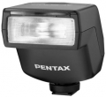

Pentax AF200FG 是一款体积小巧的闪光灯，最大闪光指数为20（ISO 100, m），简单的模式转盘操作，具备P-TTL预闪功能，可提供准确的曝光。
输出稳定，小巧精致，对我来说补光已经够用，不能改变灯头角度确实是硬伤，不过既然定位小型闪光灯不能抬头摇头也没关系了
输出稳定，三种闪光模式，2档曝光补偿 覆盖范围广
就不能抬头摇头
很小巧精致！一看就知道是宾得的东西！虽然有360，这个灯还是保留下来了！
小巧！精致
不能抬头，
不错！我非常喜欢这个小巧的闪光灯！虽然指数不大！但是很实用用！
支持自动(P-TTL)，Full，-0.5EV，-1EV的4个模式，不能细微调整闪光灯的发光量，具备相当于35mm传统相机28mm镜头的可视角度。
这个灯在机身上不但不能摇头，连抬头都不行